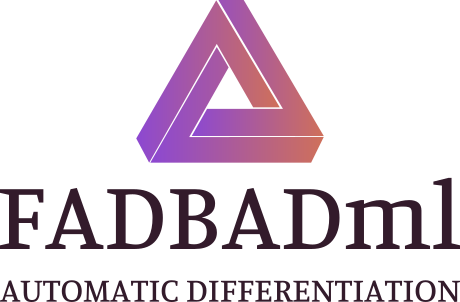

src
doc
examples
François Bidet
<fbidet@lix.polytechnique.fr>
Ismail Bennani
<ismail.lahkim.bennani@ens.fr>
This software is distributed under the
CeCILL-C license
.
It is based on
FADBAD++
, a software written by Ole Stauning and Claus Bendtsen.